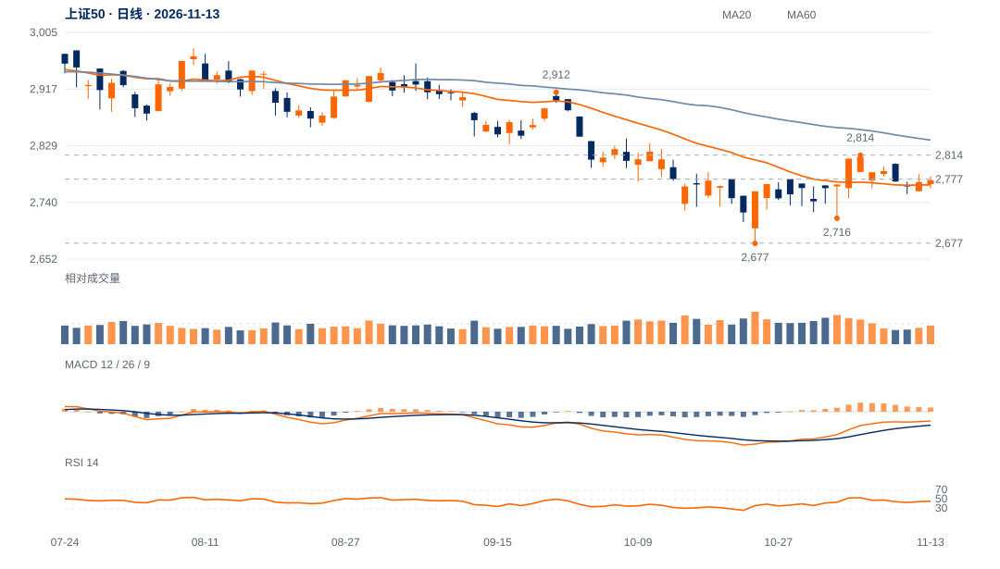

低点与需求改善
11月3日2715.72高于10月23日2676.64约1.46%，两低点间OBV增加约176亿股；低点抬高得到量价配合。
局部守位证据优于多数指数，当前应按2777附近拉锯处理，不能仅凭微幅低于颈线判定明显失败。绝对趋势仍需2814上方保持才能升级。

查看大图 ↗重新保持2777，随后满足原2814连续两日及回测要求。
先看2753，2716是较高低点守位；2677是原总底线。
11月3日2715.72高于10月23日2676.64约1.46%，两低点间OBV增加约176亿股；低点抬高得到量价配合。
现收2775.02，距2776.59颈线仅1.56点、约0.05个ATR。12日实体吞噬后13日继续小幅上收，不能与连续弱收的成长指数作同一解释。
近20日绝对涨幅约0.24%，相对沪深300的比值升4.09%；20日OBV方向余额为正。但周收仍低于20周均线，防守优势尚未转为中期上涨。
近期反弹仍未越过2813.90，周线环境偏弱。相对抗跌若无法收回颈线并推动新高，也可能只是资金向低波动权重集中。